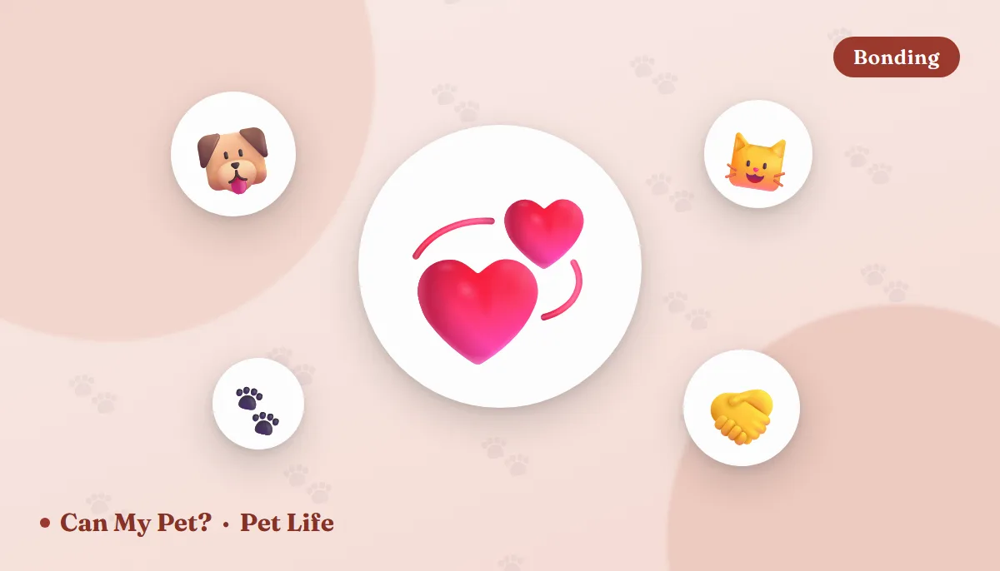

Do Pets Have Best Friends? What the Science Actually Shows

Every dog park has one: the beagle who ignores forty dogs and makes straight for the same scruffy terrier, every single time. Every multi-cat house has a pair who sleep welded together while a third cat watches coolly from the bookcase. Owners have been telling this story forever, and for a long time behaviourists filed it under wishful thinking. They don't any more — not because anyone proved dogs feel friendship the way we do, but because the preference turned out to be measurable, consistent, and surprisingly stubborn.
What counts as evidence, and what doesn't
The trouble with animal friendship is that the obvious proof — two pets curled up together looking adorable — is also what you get from two animals who just want the warm spot by the radiator. So behaviour researchers ignore the photogenic moments and count the boring ones instead. Four measures do most of the work:
🧭 Chosen proximity
Not proximity when there's a sofa shortage — proximity when the animal has a free run of the house and picks the same companion anyway. In group-living studies of both dogs and cats, who sits near whom, repeatedly and voluntarily, is one of the most reliable social signals available.
🤝 Reciprocity
Real bonds run both ways. In cats this shows up as allogrooming — mutual face and neck washing — and mutual rubbing, both of which pool a shared group scent. In dogs it shows up in play that swaps roles: the big dog takes a turn on the bottom, the fast one lets itself be caught. One-directional chasing is not friendship, whatever it looks like from the kitchen window.
😌 Relaxation in each other's presence
Loose bodies, soft faces, slow blinking in cats, a willingness to sleep deeply while the other animal moves around. Animals do not switch off next to someone they're managing. This is the measure owners most often skip, and the one that separates a real bond from a tense truce — our guides to dog body language and cat body language and tail talk are the fastest way to learn to read it.
💔 A response to separation
The most telling one. When a preferred partner is removed — boarded, rehomed, or dies — the remaining animal's behaviour changes: appetite, sleep, vocalising, searching, play. That disruption is exactly what you'd expect if the relationship mattered and nothing like what you'd expect from a shared radiator.
Worth a call if: a pet stops eating, hides, or becomes lethargic after losing a companion. Appetite loss and withdrawal are also how illness presents, and "he's grieving" is a diagnosis to reach last, not first.Dog friendships: play partners, not packs
Dogs are descended from a group-living species and remain one of the most socially flexible animals on earth — they'll form relationships with dogs, people, cats, horses and, in at least one well-documented case, a rather patient goat. In free-ranging and shelter-group settings, dogs don't spread their attention evenly. They develop stable dyads: pairs who greet each other with more enthusiasm, rest together, and seek each other out for play sessions that can be told apart from ordinary roughhousing by how carefully they're regulated.
That regulation is the giveaway. Good dog play has self-handicapping (a stronger dog visibly holding back), role reversal, frequent pauses, bouncy exaggerated movement and the play bow that resets everything after it gets too rowdy. It looks chaotic and is in fact heavily negotiated. If you want a quick test at the park, separate the two dogs for ten seconds. Friends go straight back to each other. A dog that was being bullied takes the exit.
One thing to retire: the pack-leader framing. Veterinary behaviour bodies moved away from dominance-based explanations of dog social life decades ago, and modern work describes household dogs as maintaining relationships, not ranks. What looks like hierarchy is usually habit, history and who cares most about a particular resource. If you're weighing up a second dog, temperament match matters far more than sex or size — there's more on that in male vs female dogs and in our calmest dog breeds roundup.
Cat friendships: selective, and easy to misread
The old line that cats are solitary is half true and badly worded. Cats hunt alone — a mouse feeds one cat — but where food is abundant, free-living cats form colonies with real structure, typically built around related females who share raising and defending kittens. Within those groups, some individuals are clearly bonded and others simply coexist.
Bonded cats groom each other's heads and necks, sleep in contact, rub faces and flanks, and greet with upright tails. That upright tail is close to a signature: it's a friendly-approach signal cats use with cats they like and with people they trust. Cats who merely tolerate each other do something subtler and easy to miss — they time-share. One takes the windowsill in the morning, the other in the afternoon, and the household looks peaceful because they've quietly agreed never to meet. Perfectly functional. Not friendship.
Can a dog and a cat genuinely be friends?
They can, and the criteria don't change: voluntary proximity, relaxation, reciprocal play, shared resting. What changes is the translation problem. A dog's play bow and hard stare mean something entirely different to a cat, and a cat's twitching tail means arousal rather than the dog's loose happy sweep. Pairs raised together mostly skip this problem. Pairs introduced as adults need the slow version — scent swapping first, barriers, short supervised sessions, and an escape route the cat controls. Our full walkthroughs are in do dogs and cats get along? and how to introduce a new pet.
Friendship or just tolerance? A quick read
| What you see | Probably friendship | Probably tolerance or tension |
|---|---|---|
| Resting | Touching, or within a metre by choice | Opposite ends of the room, always |
| Play | Roles swap, pauses, both re-start it | One chases, one flees, no pauses |
| Grooming | Mutual, around head and neck | None, or one pinning the other |
| Greetings | Soft approach, upright tail, sniffing | Stiffness, freezing, wide detours |
| Resources | Share space near food and doorways | Guarding, blocking, litter-box ambushes |
| When apart | Seeking, searching, waiting | Visibly more relaxed |
Should you get a second pet so yours has a friend?
Only if you want a second pet. A companion animal isn't a treatment for separation-related distress — a dog who panics when you leave usually still panics with another dog in the room, because the missing attachment figure is you. (More on that in do pets miss us when we're gone?.) Match energy and temperament, be honest about the cost of two, and run the numbers first with the pet cost calculator before you fall in love with a face.
Frequently asked questions
Does my dog miss its dog-park friend during the week?
Unknowable, honestly. Dogs clearly recognise familiar individuals by scent and behave differently towards them, but whether they think about absent friends is beyond what current methods can test. The recognition is solid; the daydreaming is a guess.
My two cats groom each other and then fight. What's going on?
Extremely common and usually normal. Allogrooming sessions often tip into a brief scuffle when one cat has had enough — it's an over-arousal end, not a betrayal. Worry only if it escalates into real fights with hissing, screaming or injuries.
Can pets be jealous of each other?
Something jealousy-like has been observed experimentally in dogs, who push between their owner and a rival object of attention. Whether it's the full human emotion is debated. Practically, it means attention is a resource worth managing like any other.
Do pets grieve when a companion dies?
The behaviour changes are well documented — appetite, sleep, vocalising, searching — and usually settle over a few weeks. Keep routines steady, add enrichment, and see your vet if eating or energy doesn't recover.
Should I let my pets "sort it out" themselves?
No. Repeated conflict rehearses the conflict. Separate, reduce competition over resources, and reintroduce gradually — and involve your vet or a qualified behaviourist if there's any aggression that draws blood.
Is my pet's favourite person a kind of best friend?
By the same measures — chosen proximity, relaxation, response to separation — yes, and you're usually top of the list. Signs your pet actually loves you goes through what that looks like in practice.
Sources: American Kennel Club guidance on dog social behaviour, play and multi-dog households; ASPCA resources on cat social structure, introducing pets and inter-cat aggression; International Cat Care guidance on feline social groups and allogrooming; American Veterinary Society of Animal Behavior position statements on dominance theory and social relationships; and published applied animal behaviour research on preferred associates in group-housed dogs and cats, play signalling and self-handicapping, feline colony structure, and behavioural change following the loss of a companion animal. For information only — not veterinary advice. Sudden changes in appetite, activity or social behaviour should be assessed by your veterinarian before being attributed to emotion.